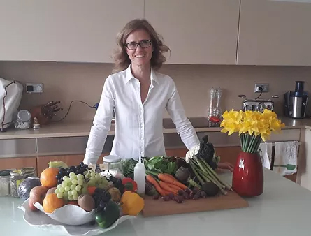
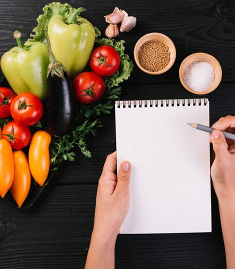

About Us
Seeds for Kids is an organisation that provides bespoke food and taste education in schools and families. Founded by Raffaella in 2017, we believe that every child can learn to eat everything despite their previous experience.

About Us
Seeds for Kids is an organisation that provides bespoke food and taste education in schools and families. Founded by Raffaella in 2017, we believe that every child can learn to eat everything despite their previous experience.

The Organisation
Seeds for kids trains children to eat healthier no matter what their experience has been before. We have two mottos: ‘You don’t have to like it, just try it’ and ‘Food is fun”
The Method
Discover:
they discover themselves and the world of flavours throughout the five senses approach to food.
Learn:
the child is taken to a journey in the nutritional values of foods, through funny stories and engaging legends that make learning memorable.
Create:
Recipes are created specifically for the children and merge culinary tradition and food trends with unexpected ingredients combined together.
Reward:
children are engaged with a unique passport to record their trip in their learnings and track their goals. A system of reward and certificates helps to motivate them.


The Founder
Born and raised in a traditional Italian family, I’ve had the joy of living in New Zealand and New York, experiences that have broadened my perspective while deepening my love for food, nature, and a healthy lifestyle.
I am Italian —
from a culture where food is more than nourishment: it’s tradition, connection, and joy.
Where recipes are handed down from one generation to the next. Where families gather around the table to share stories and laughter. Where cooking is a shared experience, and children are encouraged to explore, create, and play with food.
I still remember being three years old, proudly shaping my first little tortelli and asking my grandmother to cook it just for me. That moment sparked a lifelong passion for the art of cooking and the meaning behind it.
Today, I am a sought-after speaker and conference moderator, collaborating with both local and international organisations — including the Embassy of Italy in the UK, the Global Education Summit (GESS) in Dubai, and St Mary’s University in Twickenham. My work focuses on healthy eating, sustainability, and mindfulness.
I also serve on the board of Il Circolo, a London-based cultural association that supports young talents in the arts, literature, and music through scholarships.